The product
People are able to order plants in this app and have them delivered to their home. The app has information about different plants and a forum section.
 Felipe Parreiras
Felipe Parreiras
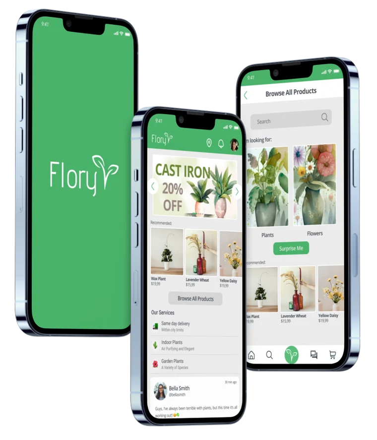
01 · Overview
People are able to order plants in this app and have them delivered to their home. The app has information about different plants and a forum section.
Trust in an app to deliver plants. Needs to be simple enough for older people with limited tech abilities.
Make a simple looking but modern app where busy people can simply buy plants fast but with the possibility for other people to also learn about plants and chat with other plant enthusiasts.
Goal statement
Our Flory app will let users buy and learn about plants and flowers, which will affect shoppers and plant enthusiasts by creating a platform that allows fast purchase and an immersive experience for those who wish.
We will measure effectiveness by the number of sales and chat/forum active users.
02 · Understanding the user
I collected data through interviews and surveys and was able to establish what possible users would want from this app, created a persona based on the data and was able to identify how the app should work and look.
1 · Interview goals
Finding out what kind of plants people are more interested in, how they take care of them and if they would trust the app.
2 · Target
People interested in plants. It is for everyone, but there are 2 main targets:
3 · Questions
There are websites to buy flowers and forums about flowers, but there isn’t an app with both together.
A lot of users, like one of our personas, are not so tech savvy and they need an easy to understand platform.
We need to incentivize sellers to keep updating their products. We need to market the app to attract new buyers to these sellers.
Offers and recommendations at the top of the homepage can help users that just want to buy a new plant without having to browse and waste time.
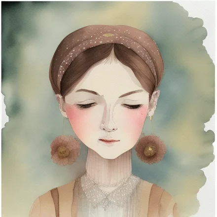
Retired psychologist and plant enthusiast
“Plants makes my home feel more alive”
Goals
Frustrations
Her sons are 28 and 32, they moved out of her house and they live with their significant others. She loves and supports her sons, but she feels the house is empty after they left. Her husband still works part-time by choice, she is alone all of the afternoon and her husband doesn’t care as much as her about plants. Plants keep her busy, happier, she takes good care of them and would like a platform to buy, see and talk about plants.
Problem statementBeth is a retired psychologist and plant enthusiast who needs a platform to talk about plants, learn, buy and have it delivered to her because plants keep her busy and happy when she is alone at home.
Student and tattoo artist who rents an apartment with a roommate
“Plants makes the small apartment I’m renting feel more like home to me”
Goals
Frustrations
She is studying biology to become a teacher in the future. She goes to school in the mornings and some afternoons. She works as a tattoo artist some afternoons, a few nights a week and during the weekends. She lives with a busy roommate and she is also too busy to take care of complex plants, she likes plants that don’t require too much water or too much sun because her apartment doesn’t have a balcony.
Problem statementGloria is a student and tattoo artist who rents an apartment with a roommate and needs a fast and simple app to buy plants because plants make her apartment feel more like home and she is too busy to go to a store.
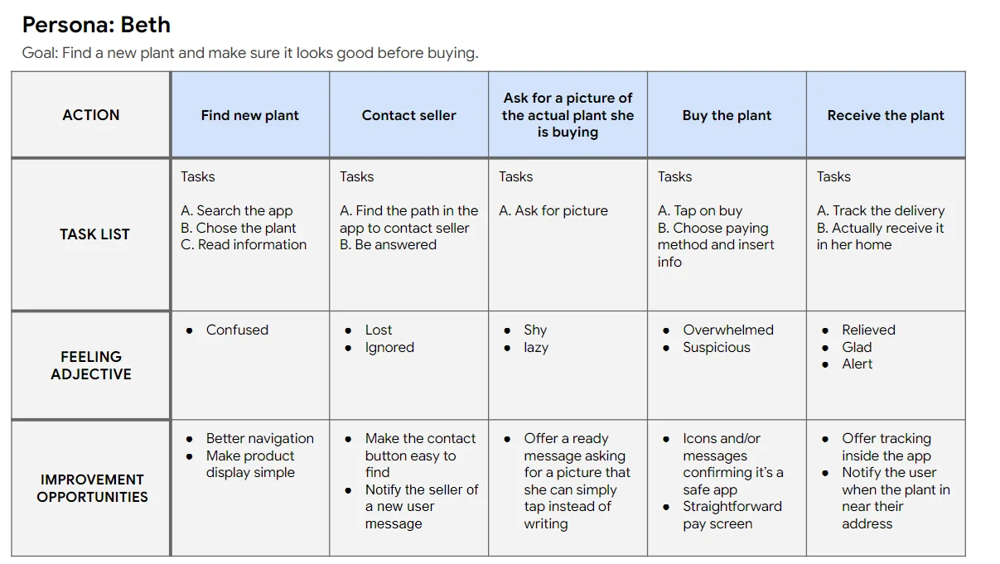
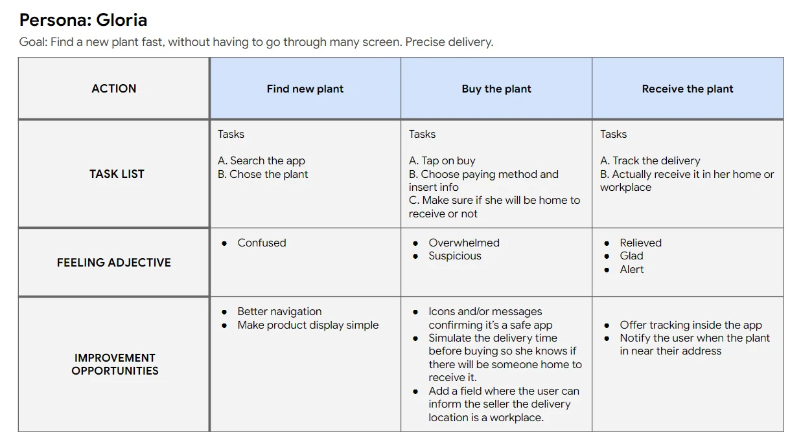
03 · Starting the design
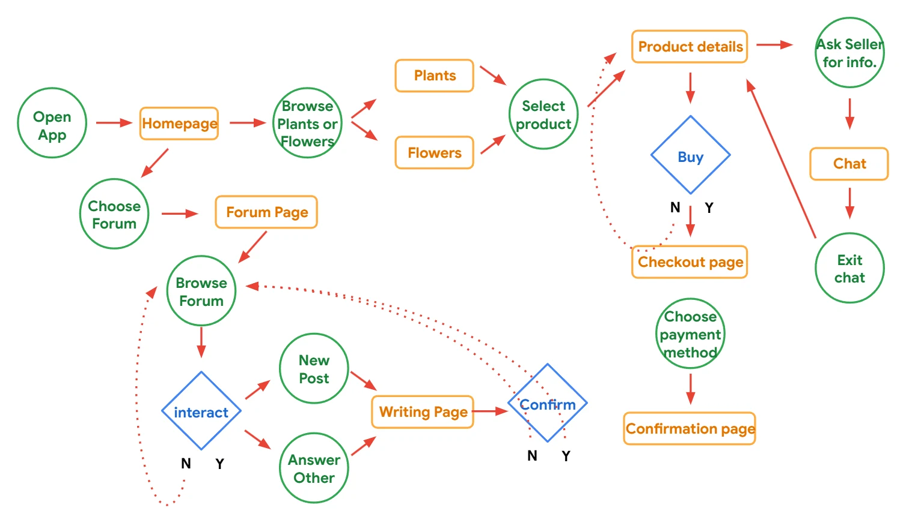
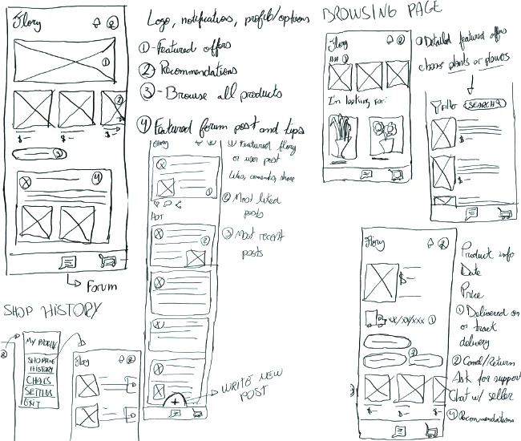
I Paper wireframes
Taking time to draft a paper wireframe ensured that elements that made it to the digital wireframe were well defined and well suited to address users’ pain points and expectations.
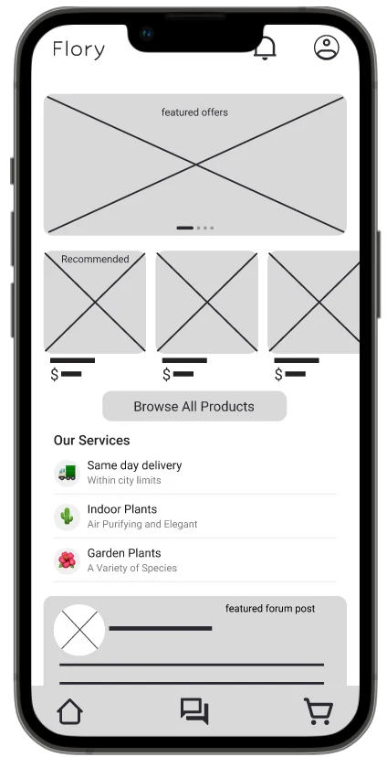
II Digital wireframes
In the homepage, according to the personas’ needs, we have at the top a fast purchase option and at the bottom an integration to the forum, where plant and flower enthusiasts can spend time and learn new things.
At the top we have featured offers, recommendations and the option to browse all products. Here we market some of our services and below it’s the featured forum post.
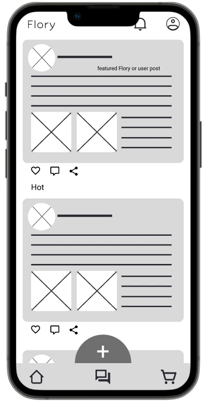
II Digital wireframes
This is the forum page, where plant and flower enthusiasts can share their history, tips, their gardens, recommendations, etc.
The forum has a featured post at the top, followed by the most liked posts and below that the newest. Down here we have a fixed new post button. Posts can be liked, commented and shared. You can also attach images.
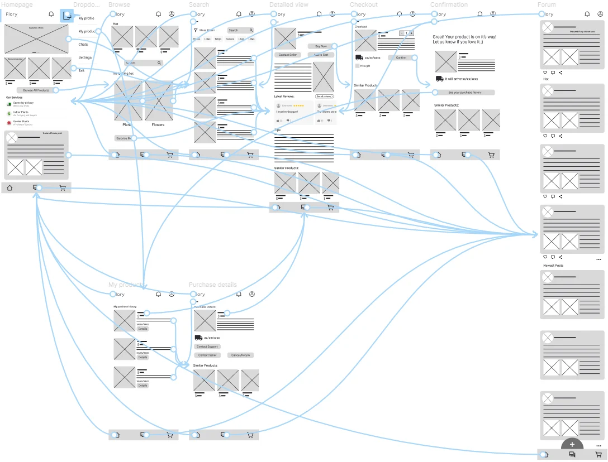
III Low-fidelity prototype
The homepage presents two main paths: the shop and the forum. After a purchase the user can track through their purchase history. This lo-fi prototype provides the general idea of the user flow.
Round 1
Round 2
04 · Refining the design
A new highlight page was added. In this page people can post pictures that last 24 hours. There is a random (for you) page and a following page where users can watch others’ highlights. People can now choose a permanent forum post or a temporary picture.
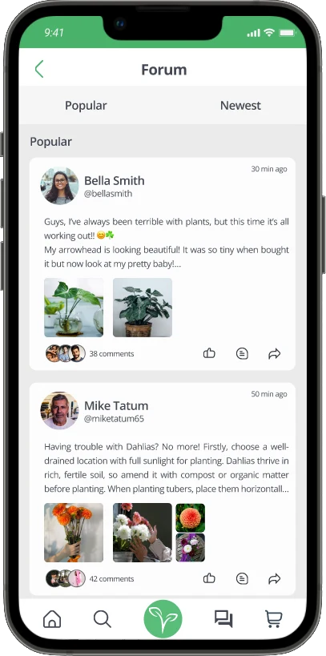
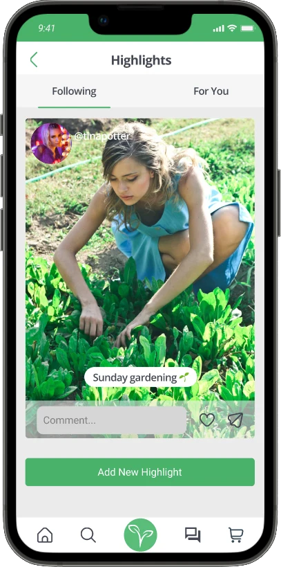
We added a chat where people can communicate directly. Before, people could only communicate via the forum. Now there are both options.
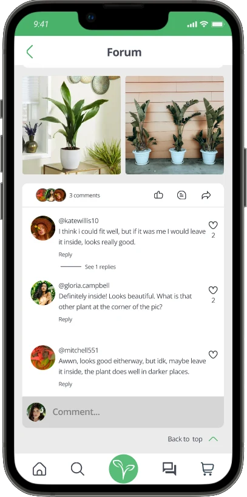
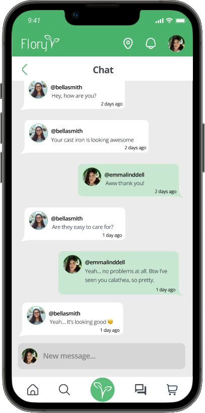
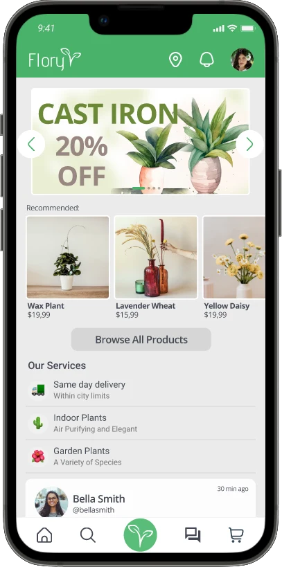
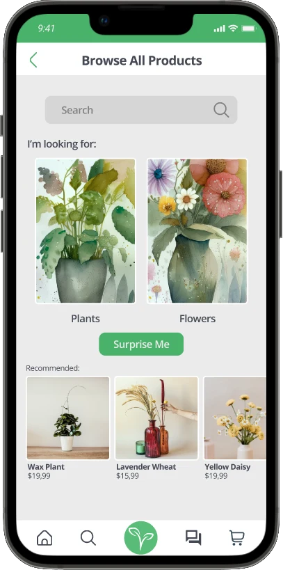
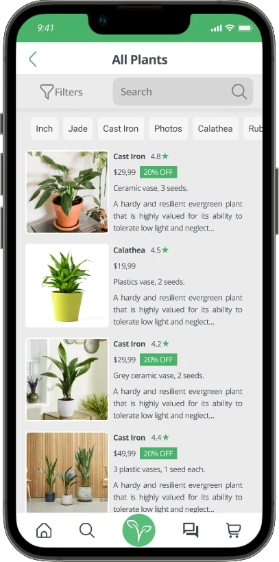
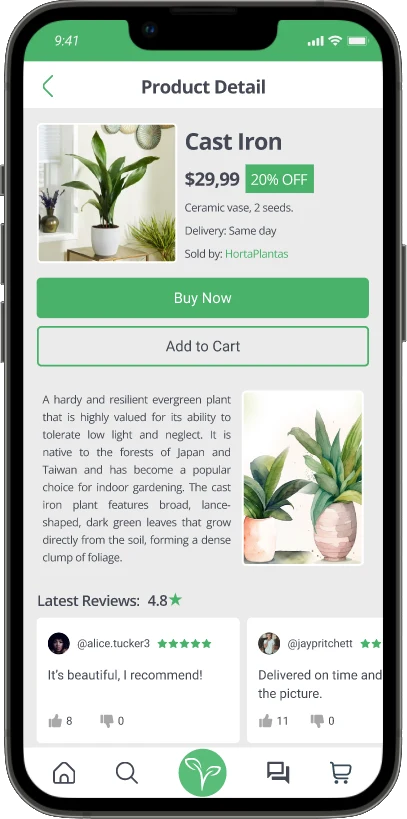
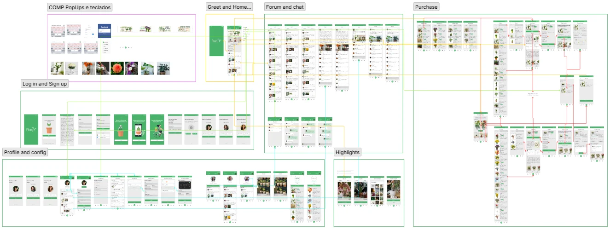
Easy to spot buttons in contrast to negative space and different motions for the same task.
An accessibility page in the configurations where people are able to apply a high contrast option and screen reader.
A “help” page where users can get in touch with Flory’s staff, ask for guidance or ask questions.
05 · Going forward
Impact
The feedback on this app is positive, many people showed interest in using it and want it to be developed into a usable app.
What I learned
I learned to conduct usability research, how to create personas, goals and problem statements, user tasks, user flow and how to consider and implement these concepts in the design.
Talk with developers and receive feedback about how well the front-end team would be able to code this design.
Talk with possible sellers and find out if they would like to upload their products in the app and if they would need other incentives besides more sales.
Conduct research to find out if users would be interested in having Flory working on desktop computers.
06 · Full case study